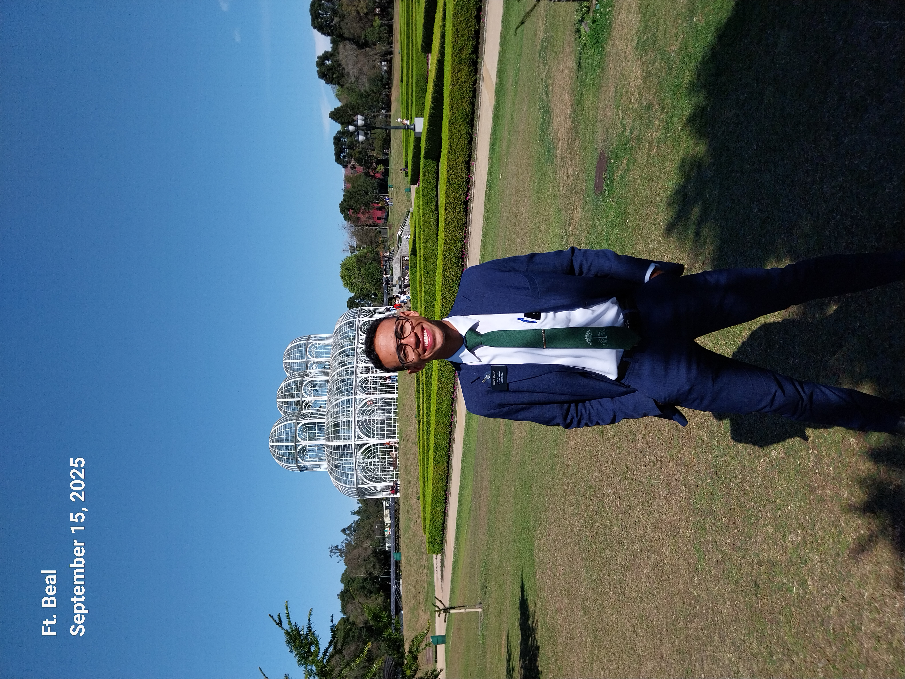
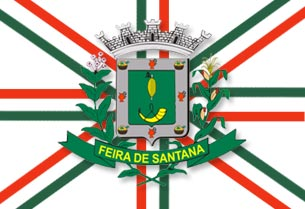

Samuel Ferreira Araújo
About Me

My name is Samuel. I am a Web Development student, and I enjoy learning how to create beautiful, functional, and accessible websites. I am interested in technology, programming, and developing new skills for my professional future.
Feira de Santana, Bahia

Feira de Santana is an important city in the state of Bahia, known as the “Princess of the Backlands.” It stands out for its busy commerce, rich culture, and its role as a connection point between several regions of Northeast Brazil. The city also has traditional celebrations, typical cuisine, and welcoming people.